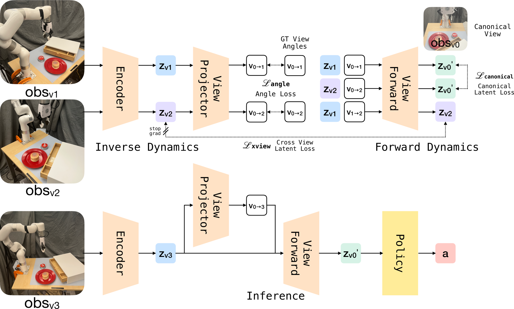
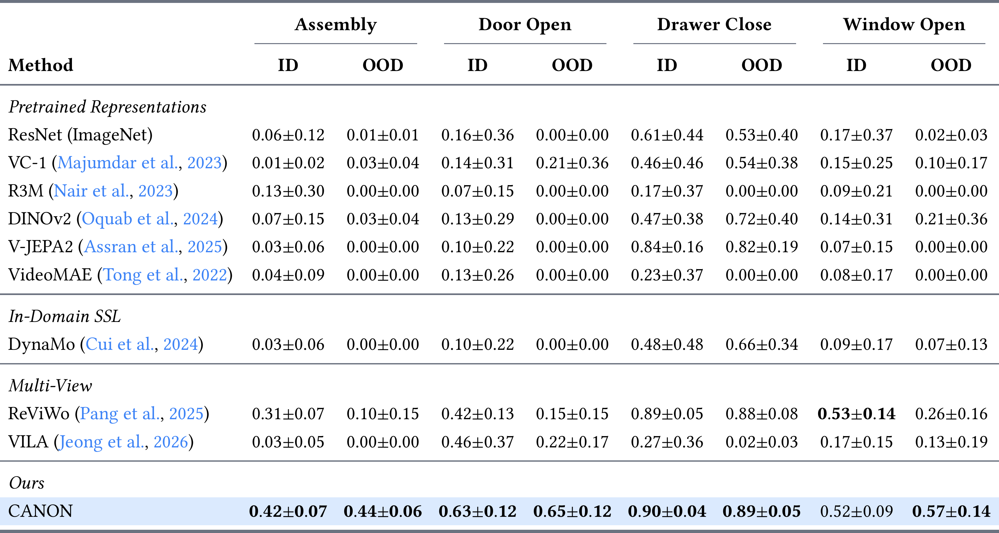
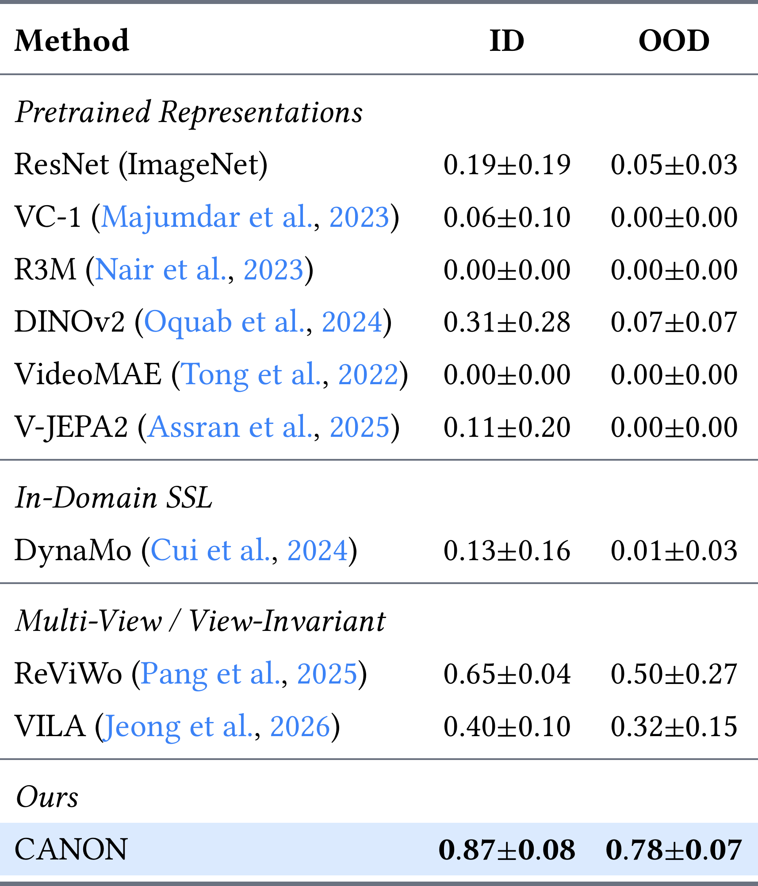
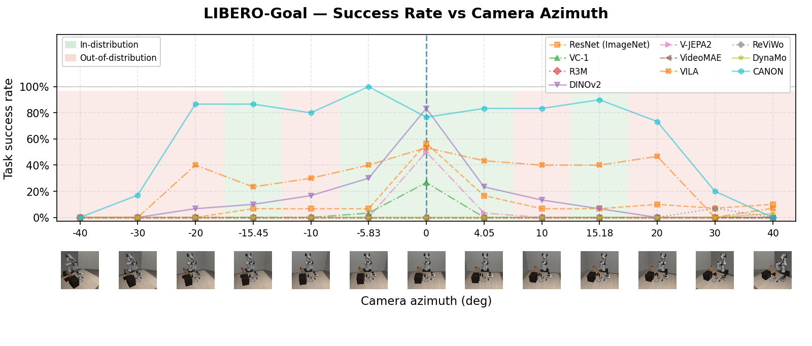
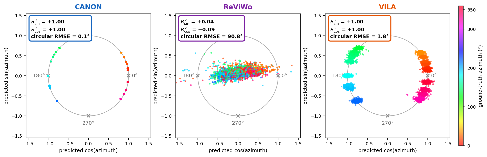

TL;DR: Canonical pretrains visual representations by modeling camera viewpoint change as an SO(3) rotation in latent space, allowing visuomotor policies to generalize to unseen camera angles without calibration.
Visuomotor policies learned from human demonstrations are brittle to camera viewpoint changes. Existing remedies each make a different assumption: novel-view synthesis needs a rendering pipeline, equivariant architectures need 3D inputs or a symmetry group hard-coded into the network, and view-invariant pretraining needs only multi-view RGB but suppresses viewpoint entirely, leaving no mechanism for extrapolating to a new one. We present Canonical, a self-supervised pretraining method that instead keeps viewpoint as a recoverable latent factor: it models camera viewpoint change as a rotation in SO(3) and warps features into a shared canonical frame before the policy, which is left unchanged. Pretraining uses multi-view RGB and the camera angle; at deployment, an angle predictor recovers the rotation from the image itself, requiring no pose information. Canonical generalizes to camera viewpoints unseen during policy training on both MetaWorld and LIBERO-Goal, outperforming the strongest multi-view baseline by 83% and 56%, and remains the strongest method at unseen viewpoints on a real-world xArm robot.

MetaWorld tests viewpoint shifts with fixed cameras spanning azimuth and elevation; a policy trained from a single canonical view is evaluated as the camera circles the scene.


LIBERO-Goal adds a distinct robot embodiment, a richer scene, and multi-step tasks (for example, opening a drawer and then placing a bowl inside), testing whether the canonicalization carries over to long-horizon control. Occlusion from tabletop objects limits the meaningful azimuth range to roughly ±20°.



At test time, Canonical estimates the camera rotation from the observation and canonicalizes features before they reach the policy. Each carousel shows rollouts of one task recorded from different held-out camera views.
Button press
Pick-and-place
Drawer close
Canonical generalizes where view-invariant methods fail because it preserves viewpoint as a recoverable latent factor instead of discarding it. On MetaWorld, we freeze each encoder and fit a linear least-squares probe on its features to predict \(\cos\theta\) and \(\sin\theta\) of the camera azimuth \(\theta\) (the encoder is never updated), then place each sample at its predicted \((\cos,\sin)\).

The same canonicalization is visible directly in pixel space. On the real xArm, we freeze each encoder and train a small decoder to invert the policy-facing feature back to an image with a pixel reconstruction loss; the encoder is never updated, so the decoder can only surface what the feature already encodes. At test time we decode each method's canonicalized feature and check whether it matches the shared canonical view.


ΔSSIM = SSIM(decoded, canonical) − SSIM(decoded, source), mean over three tasks; positive means the reconstruction moves toward the canonical view.
@inproceedings{yeung:2026:canon,
title={Canonical Observation Pretraining for Visuomotor Control},
author={Yuen-Hei Yeung and Chris Hoang and Zifan Zhao and Mengye Ren},
year={2026}
}